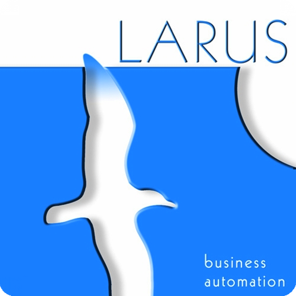

<div class="content">
    <div class="text team">
        <h1>The team</h1>
        <h2>Larus Business Automation</h2>
        <div class="clearfix">
            <div style="width:150px; float:left; margin-right:30px;">
                
            </div>
            <div style="vertical-align:middle; height:100%;">
                <p>Larus is a software house located in Mestre, Venice (Italy). Since 2004, it develops amazing web applications with the latest and more sophisticated technologies. Larus covered the &quot;storic&quot; gap between Business and IT, building a deep knowledge about client business model and qualifying its software as integral part of solution, not just as a mere technical tool.</p>
            </div>
        </div>
        <h4>Lorenzo Speranzoni</h4>
        <p>Project Director and Team Leader</p>
        <h4>Gianmarco Laggia</h4>
        <p>Design and Frontend</p>
        <h4>Mattia Zaratin</h4>
        <p>Backend</p>
        <h4>Olimpia-Ute Genghini</h4>
        <p>Marketing and Communication Management</p>
    </div>
</div>